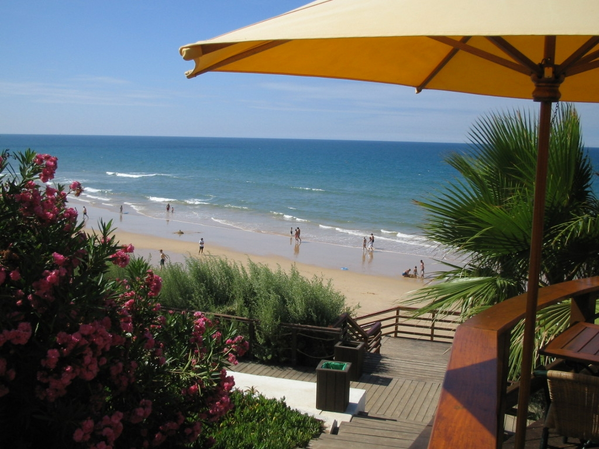
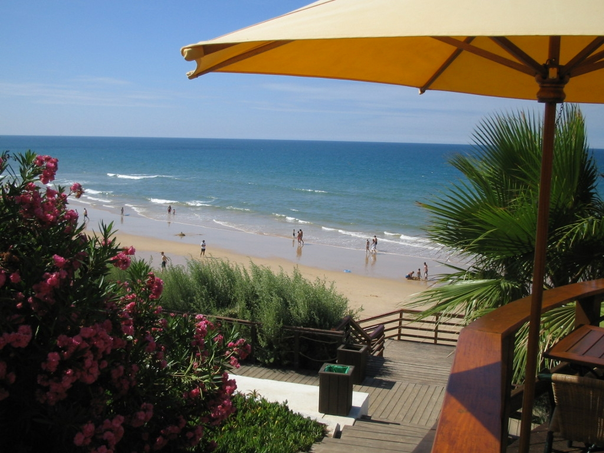

Sobre a Casa 22
Localizada em Vale do Lobo, esta moradia moderna é ideal para até 6 pessoas, com 3 quartos e 2 casas de banho. Perto da praia e da praça, oferece conforto e tranquilidade.
Comodidades
- 3 quartos (1 cama de casal, 2 camas de solteiro)
- 2 casas de banho completas
- Cozinha totalmente equipada
- Wi-Fi e ar condicionado em todas as divisões
- Rooftop com área de churrasco e vista panorâmica
- Perto da praia e do campo de golfe
Localização
Vale do Lobo – a 5 minutos da praia e da Praça. Perfeito para famílias, grupos de golfe e quem procura luxo e conveniência.